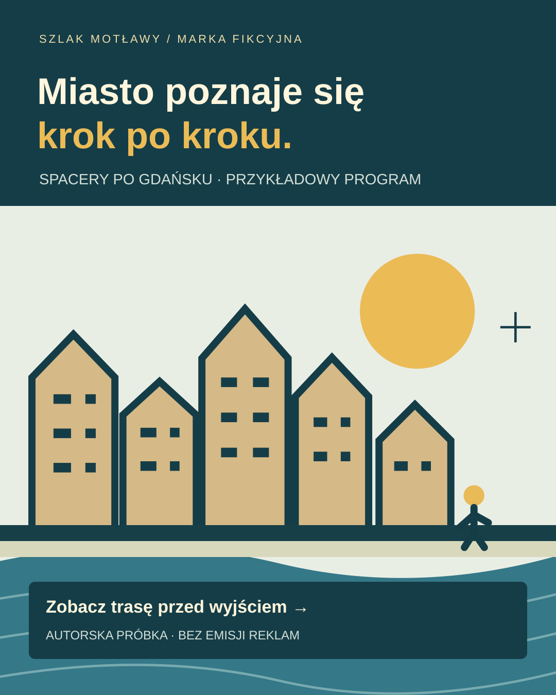
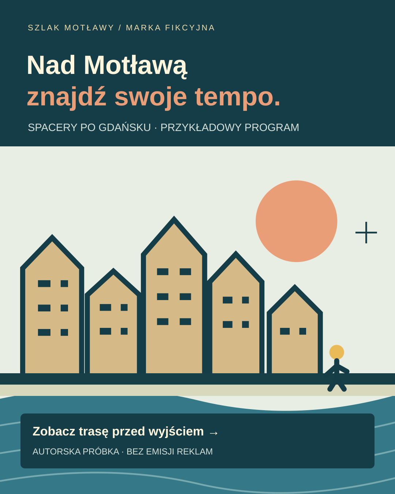

Miasto poznaje się krok po kroku
Masz popołudnie w Gdańsku? Zacznij od trasy, którą łatwo zaplanować: miejsce zbiórki, czas spaceru i najważniejsze informacje w jednym miejscu. Zobacz przykładowy program.
Pobierz edytowalny SVG ↗Jedna spójna demonstracja: komunikat w reklamie, czytelna strona i zdarzenie, które można sprawdzić.
Warianty Search i dwie kreacje Meta dla dwóch intencji odbiorcy.
Rzeczywiste pliki HTML, canonical, meta, JSON-LD i pełny poradnik.
Zgoda, deduplikacja i podgląd zdarzenia. Zapytanie ma 0 PLN przychodu.
Własne projekty • brak emisji
Sprawdź przykładową trasę, czas spaceru i miejsce zbiórki. Zapytaj o termin.
Intencja: wybór wycieczki przed wizytą. Dopasowanie fraz, programu strony i CTA.
„Spacer nad Motławą” · „Gdańsk w spokojnym tempie” · „Zobacz program wycieczki”
Najpierw program i cena, potem decyzja. Zobacz własną demonstrację strony wycieczki.
| Konfiguracja draft | Limit / mies. |
|---|---|
| google-search-city | 1000.00 PLN |
| google-search-motlawa | 800.00 PLN |
| meta-city | 700.00 PLN |
| meta-motlawa | 500.00 PLN |
3000 PLN mediów to fikcyjny przykład. Budżet reklamowy klienta jest osobny od wynagrodzenia. To cztery szkice do wyboru, bez publikacji i eksportu z platform. Nie oznaczają uruchomienia czterech nowych kampanii. W pierwszym miesiącu przewidziano maksymalnie 2 nowe kampanie łącznie Google i Meta.

Miasto poznaje się krok po kroku
Masz popołudnie w Gdańsku? Zacznij od trasy, którą łatwo zaplanować: miejsce zbiórki, czas spaceru i najważniejsze informacje w jednym miejscu. Zobacz przykładowy program.
Pobierz edytowalny SVG ↗
Znajdź swoje tempo nad Motławą
Nad Motławą warto zwolnić. Wybierz przykładowy spacer, porównaj program i sprawdź, czy jego tempo pasuje do Twojego dnia. Termin potwierdza organizator.
Pobierz edytowalny SVG ↗Ogólny H1 „Oferta”, brak meta opisu, canonical, JSON-LD i programu. Celowo przygotowany plik demonstracyjny.
Otwórz rzeczywisty HTML przed →Unikalny tytuł i opis, jedno H1, program, FAQ, canonical do własnego URL i JSON-LD WebPage zgodny z treścią.
Otwórz działający HTML po →Publiczna próbka ma celowe noindex,follow. Nie konkuruje w wyszukiwarce z rzeczywistą ofertą. Dane strukturalne opisują stronę demonstracyjną, bez ocen, fałszywych recenzji i nieistniejącej sprzedaży.
Sprawdź formularz bez podawania danych osobowych. Przyjęte zdarzenie request_booking ma wartość 0 PLN. Kliknij ponownie bez zmiany wyboru: duplikat zostanie odrzucony.
Zgoda dotyczy wyłącznie lokalnej próby analitycznej. Bez zgody nadal zobaczysz potwierdzenie symulacji. Brak wysyłki, rezerwacji i płatności; nic nie opuszcza przeglądarki. Historia znika po odświeżeniu.
Tryb demonstracyjny. Wybierz trasę i uruchom próbę.
Przyjęte w tej karcie: 0 · przychód: 0 PLN
Brak zdarzeń.
Ochrona: zgoda, identyfikator, deduplikacja, poprawna waluta, ściśle określone pola. Kontrakt lokalny; integracja z narzędziami na koncie klienta wymaga osobnej walidacji.
Pobierz rzeczywisty kod pomiaruWyłącznie obsługa po gotowości technicznej sklepu. Kwota dotyczy późniejszego prowadzenia reklam i SEO po uruchomieniu sklepu, działającego checkoutu, poprawnego pomiaru i zgód. Nie obejmuje ich budowy lub naprawy. Etap techniczny wymaga osobnej wyceny po przeglądzie i wcześniejszego uzgodnienia.
Obsługa do 3 kampanii Google łącznie Search/PMax i do 3 Meta — istniejące i nowe wliczane do tych limitów. W pierwszym miesiącu uruchomienie maksymalnie 2 nowych kampanii łącznie. Do 4 statycznych kreacji na materiałach klienta, SEO on-page 4 podstron i 1 tekst do 600 słów. Jeden rynek i język, kontrola w dni robocze, cotygodniowy przegląd i raport miesięczny.
Budżet mediów opłacany osobno. Zakres zakłada istniejące konta, poprawny pomiar i zgody, gotowe materiały klienta oraz prosty edytowalny CMS.
Start i pomiar 4 h · Google/Meta 7 h · kreacje 3 h · SEO 6 h · raport i kontakt 2 h. Godziny nie są obietnicą codziennej wyłączności.
Gotowość kont, pomiaru, zgód i materiałów sprawdzamy przed umową. Brakujące wdrożenie pomiaru, CMP, checkoutu lub przebudowę wyceniamy osobno po przeglądzie. Dodatkowe koszty wymagają wcześniejszego uzgodnienia. Praca operacyjna po zabezpieczeniu umowy i finansowania. Bez gwarancji pozycji, ROAS i liczby rezerwacji.
Załączniki są rzeczywistymi plikami tej demonstracji. Wynik testów dotyczy lokalnego kodu i struktury plików; nie potwierdza integracji Google/Meta ani efektów kampanii.